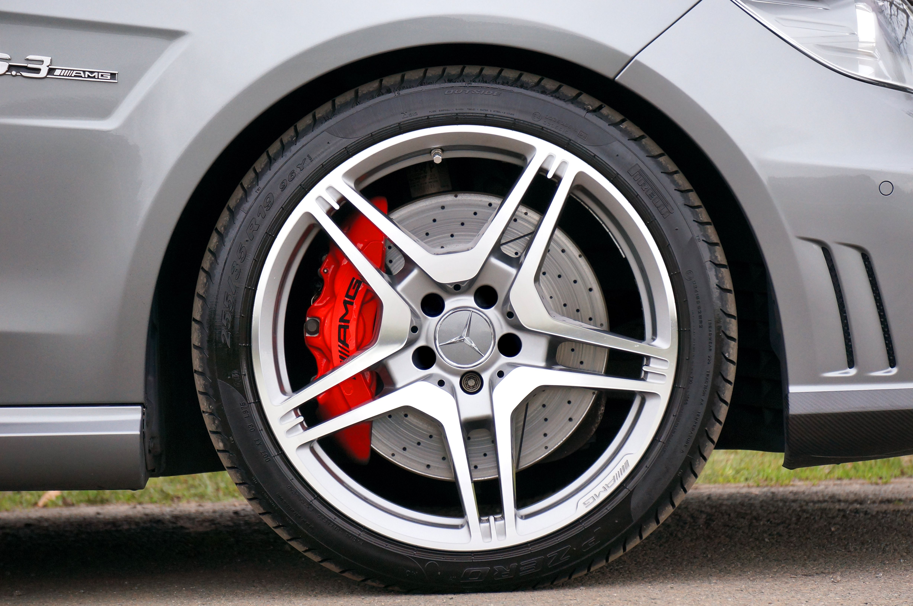

Why Does My Car Shake When Braking at High Speeds?
In over 80% of cases, a car or steering wheel shaking during braking is caused by warped brake rotors or uneven brake pad friction deposits. At high speeds, the brake pads skip over these tiny high/low spots, causing rapid vibrations felt through the steering wheel or brake pedal.

Top 4 Causes of Braking Vibration at High Speeds
Feeling your steering wheel wobble or the whole car judder when pressing the brake pedal at 50+ mph can be concerning. Identifying the root cause quickly prevents further damage to your suspension and braking components.
1. Warped or Uneven Brake Rotors
Repeated hard braking generates severe thermal stress. If cold water hits hot rotors or if lug nuts are unevenly torqued, the metal disc can warp slightly. Even a variance of a few thousandths of an inch causes noticeable high-speed pulsation.
2. Uneven Brake Pad Material Material (Pad Glaze)
If a vehicle sits for long periods after aggressive braking, hot brake pad material can physically fuse to parts of the rotor surface. This creates areas of varying friction, making the braking feel jerky at high speeds.
3. Sticking Brake Caliper
If a caliper slide pin or hydraulic piston seizes, the brake pad remains partially pressed against the rotor constantly. This causes intense overheating, rapid warping, and severe vibration when applying full braking force.
4. Worn Suspension or Wheel Alignment Issues
Loose tie rods, worn control arm bushings, or unbalanced front tires can amplify minor brake rotor variations. While the rotors start the pulse, worn suspension parts allow that pulse to travel forcefully into the cabin and steering column.
How to Tell Front Brake Issues from Rear Brake Issues
A quick diagnostic trick: if you feel the wobble primarily through the steering wheel, the issue is with your front brakes. If you feel the vibration in your seat or brake pedal without steering wheel movement, the rear rotors are usually to blame.
Frequently Asked Questions
It is safe for short distances, but long-term driving will accelerate wear on suspension bushings, wheel bearings, and steering components.
Yes, if the rotor disc still meets the manufacturer's minimum thickness specification, a mechanic can turn (resurface) them on a lathe to make them flat again.